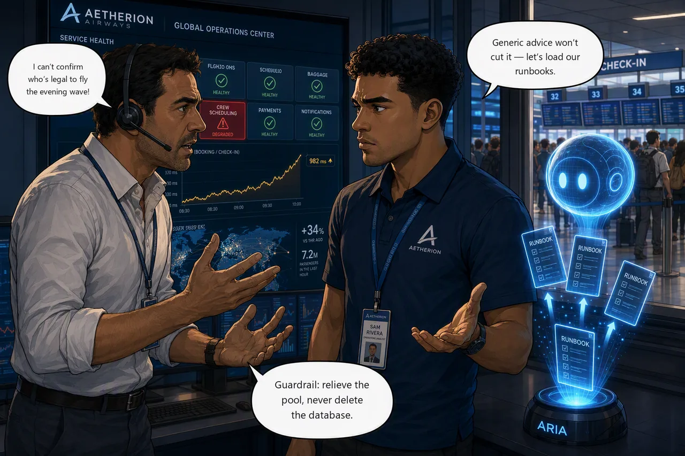

Challenge 4 · Give the Agent Aetherion's Operational Knowledge¶
Challenge 04 of 08 · Act II: Human-Guided Operations
Run mode: Review → approved write · Governance: every action approved by you
Stage: Foundation → Operations → Engineering → Autonomous → Major Incident
Situation. Crew scheduling is failing (the crew-scheduling tile is red) and duty
managers can't confirm who is legal to fly the evening wave. The services that share
its database are wobbling too, so "the database is down" is the obvious call, and
it's wrong. Out of the box the agent gives generic advice, and a generic "restart the
database" is exactly what Aetherion's runbooks forbid. The fastest path to the right
answer is to ground the agent in your own knowledge.
Mission. Ground the SRE Agent in Aetherion's architecture and runbooks so it
recommends the sanctioned fix, then recover crew-scheduling with that
non-destructive remediation and verify service is restored.
Why this matters
- Ground the agent: load Aetherion's runbooks and architecture
- Origin, not symptom: a shared dependency spreads pain far beyond the culprit
- Respect guardrails: repair the query path, never delete the database
- Legal to fly: restore crew scheduling before the evening wave
Tasks¶
- Find the origin. Several database-backed services look unhappy. Work out which one is causing it and which are just sharing the damage.
- Ground the agent. Load Aetherion's
knowledge/runbooks, then re-ask the remediation question and watch the advice change. - Apply the sanctioned fix. Repair the query path the runbook points to (never delete the database), then confirm crew scheduling recovers.

Suggested Azure SRE Agent prompt¶
Paste into the agent chat
crew-scheduling is timing out and the other database-backed services are
slower than usual, but the pods themselves are not CPU-bound and the database
is not down. Work out which service's queries are saturating the shared
database. Then, using the Aetherion runbooks I've loaded: what is the
sanctioned remediation? Cite the guardrail and give me a plan I can approve. Do
not delete or restart the database.
Success criteria¶
- You can name the origin, the service whose queries are saturating the shared database, and explain why its neighbours are suffering without being at fault.
- The grounded agent cites the runbook guardrail (repair the query path, never delete the database) and you apply that non-destructive fix under approval.
/api/crewis back inside the 400 ms latency budget while the roster rush is still running. That is whatcheck-challenge.ps1 4grades. A tile that is merely answering again is not a pass.
Verify your work
Run this when you're done. It grades the real end state:
Hints¶
Hint: how wide is the blast radius?
More than one service is unhappy, but they are not equally unhappy, and they have something in common. Ask what they share, then ask which of them is using that shared thing hardest. The one generating the load is the origin; the rest are collateral.
A database that is busy is not the same as a database that is broken.
Hint: let the runbooks answer
Load the knowledge/ Markdown files from your lab clone (the application fork
doesn't carry them), then re-ask and watch the advice turn Aetherion-specific.
Before you reach for a remedy, work out which layer is saturated. If the pods are comfortable and the database is not, adding pods or connections just sends more work to the part that is already at its limit.
Stuck? Step-by-step for each task
Give each task a genuine attempt first, and skim the hints above. When you want the exact clicks, open the matching task below.
Task 1 · Find the origin
- Read the Operations Center:
crew-schedulingis red, and its database-backed peers (booking,telemetry-ingest) are slower than their baseline.baggage, which touches no database, is untouched. That contrast is the clue. - Compare the layers: pod CPU (
kubectl top pods -n aetherion) against the PostgreSQL server's CPU in the portal. The pods are comfortable and the database is not, so the constraint is the work being sent to it. - Now ask which service is sending that work. Only one is running a request rush against a table it can no longer read efficiently.
Task 2 · Ground the agent
- In the agent, open Builder → Knowledge Sources and add Aetherion's
runbooks from your lab clone's
knowledge/folder (architecture, escalation, ops guide, platform standards, and the AKS / APIM / database runbooks). The application fork does not contain them. - Bulk upload can partially fail. Check every file shows Indexed, then confirm the agent can actually quote a runbook line before relying on it.
-
Now ask the same remediation question again, word for word:
crew-schedulingis slow while its pods sit idle and the shared PostgreSQL server is saturated. What is the sanctioned fix, and what am I not allowed to do?
The advice should now cite Aetherion's runbook by name instead of offering generic Kubernetes guidance. If it still answers generically, the knowledge source is not indexed yet.
Task 3 · Apply the sanctioned fix
- Follow the runbook: repair the query path. Do not delete or restart the database.
- Note what the autoscaler is doing. It is not adding replicas, because pod CPU is below target: the pods are waiting, not working. That rules out scaling as the remedy, and widening the connection pool with it.
- The remedy is a schema change, so apply it under approval (keep the agent
in Review and approve the write). Then verify
/api/crewis fast again, not merely answering.
Reference¶
Up next: make investigation & recovery reusable
You've worked several AKS incidents the same way, so it's time to build a specialist and encode a recovery so both are reusable.